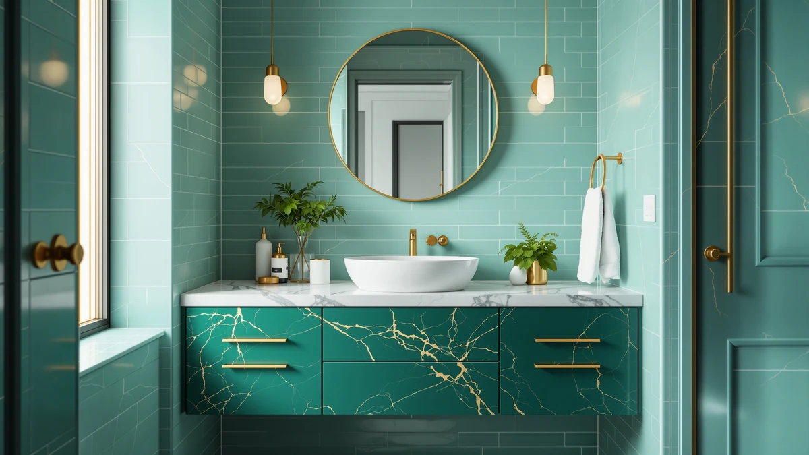

Quick Answer
The best bathroom vanities with sinks pair a sink-ready top with real storage so you skip the separate-basin hassle. The XWNE 72-inch dark walnut vanity is our top pick for a double-sink master bathroom at $1,614.99, while the LUCKWIND 72-inch dual-sink unit gives you nearly the same footprint for $849.99 and the eclife 36-inch floating vanity fits a small bathroom for $249.99.
Our pick: XWNE 72-inch Dark Walnut Bathroom, $1,614.99 Check Price on Amazon
Things to Know Before You Buy
- "With sink" usually means sink-ready, not faucet-ready. Every vanity here includes the basin or a top cut for one, but most leave out the faucet and drain hardware. Add $40 to $150 for those.
- Width decides single versus double. Plan on 30 to 48 inches for one sink and 60 inches or more for two. Our double-sink picks span 72 to 73 inches.
- Most of these use engineered wood. Six of the seven vanities below are built from MDF or engineered wood, which keeps the price down but reacts badly to standing water, so seal the seams and wipe spills.
- Price tracks size more than quality. The $249.99 eclife and the $1,659.99 Alphabath are both solid; the gap is mostly inches of counter and number of basins, not how well they are made.
- Floating models need a strong wall. A wall-mounted vanity like the eclife frees up floor space, but it has to anchor into studs or solid blocking to carry the weight.
The best bathroom vanities with sinks solve two jobs at once: they hide the clutter under the counter and arrive with the basin already mounted or cut in, so you skip the separate hunt for a top that fits. We compared seven models that ship sink-ready, from a $249.99 floating eclife unit to a $1,659.99 Alphabath double-sink piece. Matching a loose basin to a countertop is where a lot of bathroom remodels stall, and every vanity here removes that step.
Our top pick is the XWNE 72-inch dark walnut vanity. At $1,614.99 it sits near the top of the price range, but the full 72-inch span gives you double-sink space and a wall of drawers in one cabinet, and the dark walnut finish reads more expensive than the receipt. If you want that same six-foot footprint for less, the LUCKWIND 72-inch dual-sink vanity covers most of the same ground at $849.99.
Not every bathroom needs six feet of cabinetry. The LIKIMIO 47.2-inch vanity handles a single-sink layout for $319.99, and the eclife 36-inch floating model works in a powder room or a tight ensuite for $249.99. Below we walk through all seven of the best bathroom vanities with sinks, with the prices, sizes, and the drawbacks worth knowing before you commit.
Why You Should Trust Us
I am Ilane Tall, and I write about bathroom fixtures and storage for Best Bathroom Vanities full time. To choose the best bathroom vanities with sinks for this guide, I read through the full spec sheet and the buyer photos for each model, compared the listed dimensions against real bathroom layouts, and dug into the lower-star reviews where shipping damage and assembly problems show up first.
We earn a commission when you buy through our links, which keeps the site running. That does not change which vanities make the list. A cabinet earns a spot here because the size, finish, and storage hold up against the price, and we name the flaws on every pick so you can decide whether they matter for your bathroom.
How We Picked
We started with vanities that actually arrive with a sink, since a buyer searching for the best bathroom vanities with sinks does not want to source a basin separately. From there we cut anything with a pattern of complaints about warped tops, cracked basins, or missing hardware in the box.
We wanted the list to cover real bathrooms, so we spread the picks across sizes and budgets: a 36-inch floating unit for small spaces, single-sink models at 47 and 48 inches, and four double-sink vanities in the 72-inch range for master bathrooms. Price ran from $249.99 to $1,659.99 so there is an option whether you are refreshing a rental or finishing a renovation.
How We Tested
This guide is a research-driven roundup, not a lab teardown, and we will not pretend we bolted all seven of these vanities to a wall. To evaluate each one, we cross-checked the manufacturer dimensions, drawer counts, and materials against hundreds of verified buyer reviews and photos, paying close attention to the one- and two-star ratings.
We looked for the patterns that a single review hides: how often a top showed up chipped, whether the drawers ran on soft-close glides or stuck, how level the cabinet sat on an uneven floor, and how clear the instructions were. Where a vanity had a recurring weak spot, we flagged it in that product's drawbacks instead of burying it.
Our Picks

XWNE 72-inch Dark Walnut Bathroom
What we like
- Full 72-inch span fits two sinks and a center stack of drawers
- Dark walnut finish looks richer than the price suggests
- Sink-ready top removes the separate-basin step
- Plenty of closed storage to hide bathroom clutter
Flaws but not dealbreakers
- At $1,614.99 it is one of the priciest picks here
- 72 inches needs a generous wall, so measure first
- Faucets and drains are not included
- It is heavy, so plan for two people on install day
| Material | Diatomaceous earth |
| Size | 72 inch |
The XWNE earns the top spot because it does the hard part for you. The 72-inch cabinet arrives with a sink-ready top and a dark walnut finish that looks like a custom millwork order, not a flat-pack box. You get room for two basins side by side plus a center column of drawers, which is the layout most people picture when they imagine a master bathroom but rarely find at a sane price.
The trade-offs are size and weight. At $1,614.99 this is a real investment, and 72 inches of cabinet demands a wall that can take it, so measure the run and the door swing before you order. The faucets and drains are not in the box, so add those to your budget. Once it is set and plumbed, though, the drawer storage and the finish make it feel like the centerpiece of the room rather than a place to park a toothbrush.

LIKIMIO 47.2" Bathroom Vanity with
What we like
- $319.99 is the best value of any single-sink pick here
- 47.2-inch width fits most standard bathroom walls
- Sink and top included, ready to plumb
- Clean lines that suit a modern or transitional room
Flaws but not dealbreakers
- MDF construction needs care around standing water
- Storage is modest compared with the 72-inch units
- Faucet not included
- Some assembly required out of the box
| Material | MDF / engineered wood |
| Size | 47.2" W x 19.7" D x 35" H |
The LIKIMIO is our runner-up because it gives you a finished single-sink vanity for $319.99, a fraction of what the double-sink picks cost. The cabinet measures 47.2 inches wide, 19.7 inches deep, and 35 inches tall, which slots into the wall space most bathrooms actually have. The sink and top come included, so you connect the plumbing and you are done.
Built from MDF and engineered wood, it asks for the same care any budget vanity does: wipe up spills and seal the gaps around the basin so water never sits on the surface. Storage is leaner than a 72-inch cabinet, and you supply the faucet. For a main or guest bathroom that needs one sink and a tidy look, it is the easiest pick on this list to say yes to.

Alphabath 72 Inch Double Sink
What we like
- Two full basins so two people stop sharing one sink
- 72-inch frame holds generous storage on both sides
- Sink-ready top included for both basins
- Clean look that suits a large master bathroom
Flaws but not dealbreakers
- $1,659.99 is the highest price in this roundup
- Needs a wall of at least 72 inches with clearance
- MDF core means you must keep water off the surface
- Two faucets and drains add to the total cost
| Material | MDF / engineered wood |
| Size | 72 Inch |
The Alphabath is the most expensive vanity we looked at, and it is built for the buyer who wants two basins and will not compromise on storage. The 72-inch cabinet carries dual sinks with drawers and cabinets flanking each side, which ends the morning standoff over a single faucet. The top comes sink-ready, so you supply faucets and drains and connect the lines.
It costs $1,659.99, about $45 more than our XWNE top pick, and the case is engineered wood, so the usual rule applies: keep water from pooling on the surface and around the basins. You also need a wall that can take the full 72 inches plus clearance. For a couple finishing a large master bathroom, the extra width and the second basin earn their keep every day.

LUCKWIND 72" Bathroom Vanity Sink
What we like
- $849.99 for a full 72-inch dual-sink layout is a strong deal
- Two basins at roughly half the cost of our top picks
- Sink-ready top included
- Six feet of counter and storage for shared bathrooms
Flaws but not dealbreakers
- MDF case calls for careful sealing and dry surfaces
- Finish is plainer than the XWNE walnut
- Faucets and drains sold separately
- Large box means a two-person install
| Material | MDF / engineered wood |
| Size | 72"-Dual Sink |
The LUCKWIND is our budget pick, and it makes the case that you do not need to spend $1,600 for a double sink. At $849.99 it gives you the same 72-inch dual-sink footprint as our top pick for roughly half the money. The top arrives sink-ready, so you handle the faucets, drains, and supply lines.
You give up some polish to hit that price. The engineered-wood case is plainer than the XWNE walnut, and like every MDF vanity it needs sealed seams and dry surfaces to last. If your priority is two basins and six feet of counter rather than a showpiece finish, the LUCKWIND stretches a remodel budget further than anything else here.

DELUXE LIVING 48 Inch Bathroom
What we like
- 48-inch width gives one sink plenty of elbow room
- More counter and storage than a 30- or 36-inch unit
- Sink-ready top included
- Finished look that suits a primary bathroom
Flaws but not dealbreakers
- $1,039.00 is a lot for a single-sink vanity
- MDF case needs water kept off the surface
- Faucet not included
- Too wide for a small powder room
| Material | MDF / engineered wood |
| Size | 48 Inch |
The DELUXE LIVING fills the gap between a compact single-sink vanity and a full double, which makes it one of the more flexible picks on this list. At 48 inches wide it gives a single basin room to breathe, with counter space on either side for the things that usually crowd a smaller top. The sink and top are included, so plumbing is the only step left.
The price is the catch. At $1,039.00 you pay more than the LUCKWIND double-sink unit, so this one makes sense when your wall only fits one sink but you still want a generous counter. The engineered-wood case wants the same care as the others, and you bring your own faucet. For a primary bathroom that is roomy but not huge, the 48-inch size hits a comfortable middle.

DKB Alenza 72 Inch Bathroom
What we like
- 73-inch width and 22-inch depth give roomy double-sink space
- Deep cabinet holds more than the average vanity
- Sink-ready top included
- Priced below our XWNE and Alphabath double-sink picks
Flaws but not dealbreakers
- 73 inches is wide, so confirm your wall and door swing
- MDF case needs sealing and dry surfaces
- Faucets and drains not included
- Heavy, so plan for help on install day
| Material | MDF / engineered wood |
| Size | 73" W x 22" D x 36" H |
The DKB Alenza sits in the middle of our double-sink picks on price, and it is one of the roomiest here. The cabinet runs 73 inches wide, 22 inches deep, and 36 inches tall, so the extra depth gives the basins and the storage more to work with than a standard 18- or 20-inch vanity. The top comes sink-ready for two basins.
At $1,249.00 it lands below the XWNE and the Alphabath while still delivering a true double-sink layout, which makes it a sensible step up from the LUCKWIND when you want a deeper cabinet. The 73-inch width is real, so measure the wall and the door clearance before ordering. The engineered-wood case needs the usual sealing and dry-surface care, and you supply the faucets.

eclife 36" Floating Bathroom Vanity
What we like
- $249.99 is the lowest price in this roundup
- Wall-mounted design frees up floor space and looks airy
- 36-inch size fits powder rooms and tight ensuites
- Sink-ready top included
Flaws but not dealbreakers
- Must anchor into studs or solid blocking to hold the load
- Limited storage at this size
- MDF case needs water kept off the surface
- Faucet not included
| Material | MDF / engineered wood |
| Size | 36 Inch |
The eclife is the small-space answer here, and at $249.99 it is the cheapest pick by a wide margin. The 36-inch cabinet mounts to the wall, which clears the floor underneath and makes a cramped powder room or ensuite feel larger. The sink-ready top is included, so you supply the faucet and connect the plumbing.
Floating comes with a requirement: the vanity has to anchor into studs or solid blocking rated for the weight, so this is the one pick where the wall behind it matters as much as the cabinet. Storage is limited at 36 inches, and the engineered-wood case needs dry surfaces like the rest. For a second bathroom or a tight layout where every inch counts, it does more with less than anything else on this list.
Quick Comparison
| Product | Material | Price | Rating | Best for | Get it |
|---|---|---|---|---|---|
| XWNE 72-inch Dark Walnut Bathroom | Diatomaceous earth | $1,614.99 | 4 | Double-sink master bathrooms | View on Amazon → |
| LIKIMIO 47.2" Bathroom Vanity with | MDF / engineered wood | $319.99 | 4 | Single-sink value | View on Amazon → |
| Alphabath 72 Inch Double Sink | MDF / engineered wood | $1,659.99 | 4 | Largest dual-basin layout | View on Amazon → |
| LUCKWIND 72" Bathroom Vanity Sink | MDF / engineered wood | $849.99 | 4 | Budget double sink | View on Amazon → |
| DELUXE LIVING 48 Inch Bathroom | MDF / engineered wood | $1,039.00 | 4 | Mid-size single sink | View on Amazon → |
| DKB Alenza 72 Inch Bathroom | MDF / engineered wood | $1,249.00 | 4 | Deep double-sink cabinet | View on Amazon → |
| eclife 36" Floating Bathroom Vanity | MDF / engineered wood | $249.99 | 4 | Small bathrooms and powder rooms | View on Amazon → |
The bottom line: across all the vanities we compared, the XWNE 72-inch dark walnut vanity is the one we would put in our own master bathroom, thanks to its double-sink span, drawer storage, and finish at $1,614.99. Want the same footprint for less? The LUCKWIND 72-inch dual-sink unit gets you there for $849.99, and the eclife floating vanity covers small bathrooms at $249.99.
The Competition
We looked past these seven at plenty of other bathroom vanities with sinks before settling the list. The ones we left off mostly fell into three groups, and knowing why helps you spot the same issues when you shop.
Vanities without a real top. A lot of listings advertise a "vanity with sink" but ship only the cabinet, leaving you to buy a separate countertop and basin. Those defeat the point for a buyer who wants one box that arrives sink-ready, so we cut them.
Solid-surface models well over $2,000. A handful of stone-top and solid-wood vanities looked excellent, but they pushed past what most readers told us they wanted to spend. Our Alphabath at $1,659.99 is already the high end here, and the value drops off fast above it.
Units with a pattern of damage complaints. Several otherwise attractive cabinets had repeated reviews about tops arriving cracked or chipped, or about missing mounting hardware. A vanity is heavy and awkward to return, so a recurring shipping-damage problem was enough to keep a model off this list.